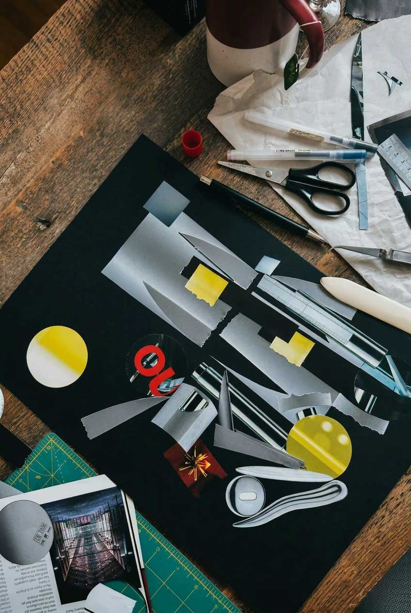

Toronto
Ontario, Canada
Jiani Lu (b. Changsha, China; raised in Berlin; lives and works in Toronto) is an artist whose practice centers on collage, with film photography and painting in dialogue. Working with found print ephemera and industrial image residue, she investigates migration, layered memory, and the politics of image production through a process rooted in precision, patience, and material care.
Composing from the periphery, Lu reorganizes the industrial image stream—advertising, packaging, and the printed remnants of desire and production—into quietly charged compositions. She builds the way memory builds for the in-between: layered, iterative, and versioned. Their cuts are somatic; edits are negotiations. Across their work, recurring themes of autonomy and partnership, sigil sign-reading, domestic space, and the unseen labour behind polished surfaces emerge through an approach that is rigorous, intuitive, and understated.
Drawing on more than a decade as a creative director working within the global image economy, Lu translates a systemic understanding of visual production into an artistic practice attentive to labor, circulation, and material transformation.
